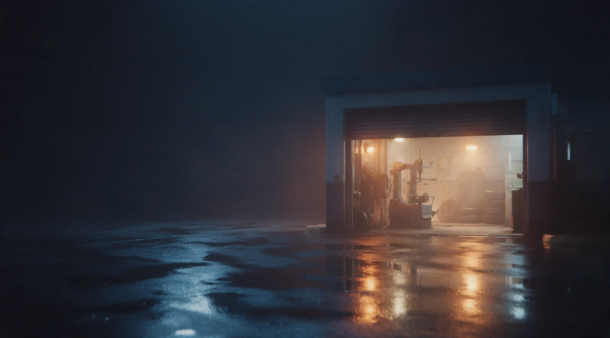
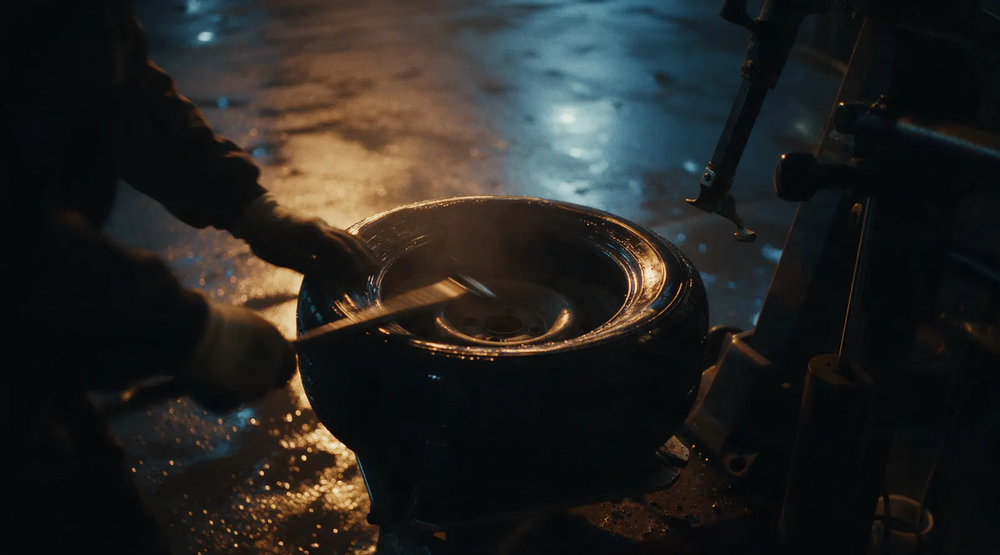
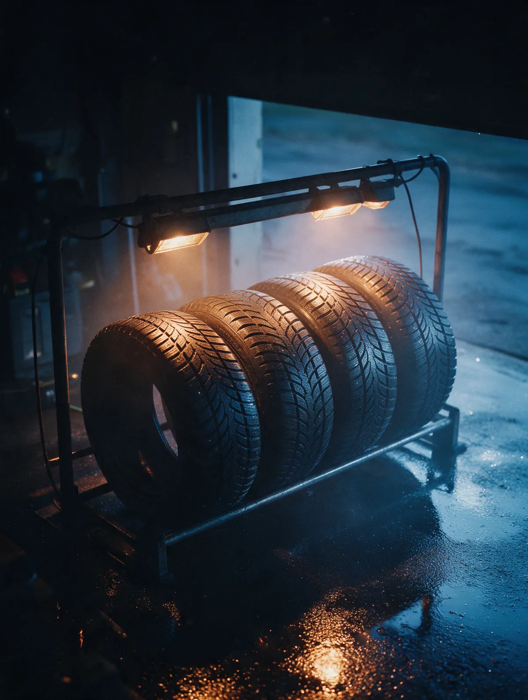

Шиномонтаж · Барнаул · Коммунаров, 17
Шиномонтаж в Барнауле – запись в WhatsApp
Выберите услугу и время, заявка уйдёт мастеру в WhatsApp. Приезжайте на проспект Коммунаров, 17 к своему окну.
- Каждый день с 9:00 до 20:00
- Запись в WhatsApp на удобное время
- У остановки «Красный текстильщик»

Цены
Цена зависит от радиуса и того, что нужно сделать. Назовём её в WhatsApp до приезда.
Шиномонтаж
- Сезонная переобувка комплектауточнить
- Комплект на дискахснять и поставитьуточнить
- Балансировкауточнить
- Ремонт проколауточнить
В заявке укажите радиус колёс – так мастер сразу скажет цену и время.
Как записаться
- 01
Выберите услугу и время
Прямо на сайте – день и удобное окно.
- 02
Заявка уйдёт в WhatsApp
Мастер ответит и подтвердит время.
- 03
Приезжайте на Коммунаров, 17
Рядом остановка «Красный текстильщик».
- 04
Забираете машину
Переобули – и можно ехать.


Почему удобно
Договориться можно в WhatsApp
Без звонков: написали, выбрали время, приехали.
Каждый день
Без выходных, с 9:00 до 20:00.
Рядом с домом
Проспект Коммунаров, 17 – в 188 метрах от остановки «Красный текстильщик».
Частые вопросы
Как записаться?
Выберите услугу, день и время на сайте – заявка уйдёт в WhatsApp. Или позвоните: +7 (902) 145-27-27.
Сколько стоит переобувка?
Зависит от радиуса и типа колёс. Напишите в WhatsApp радиус – назовём цену до приезда.
Можно приехать без записи?
Позвоните или напишите – скажем, когда сможем принять.
Где вы находитесь?
Барнаул, проспект Коммунаров, 17. Ближайшая остановка – «Красный текстильщик».
Запишитесь на удобное время
- Адрес
- просп. Коммунаров, 17, Барнаул
- Часы
- Каждый день 9:00–20:00
- Телефон
- +7 (902) 145-27-27